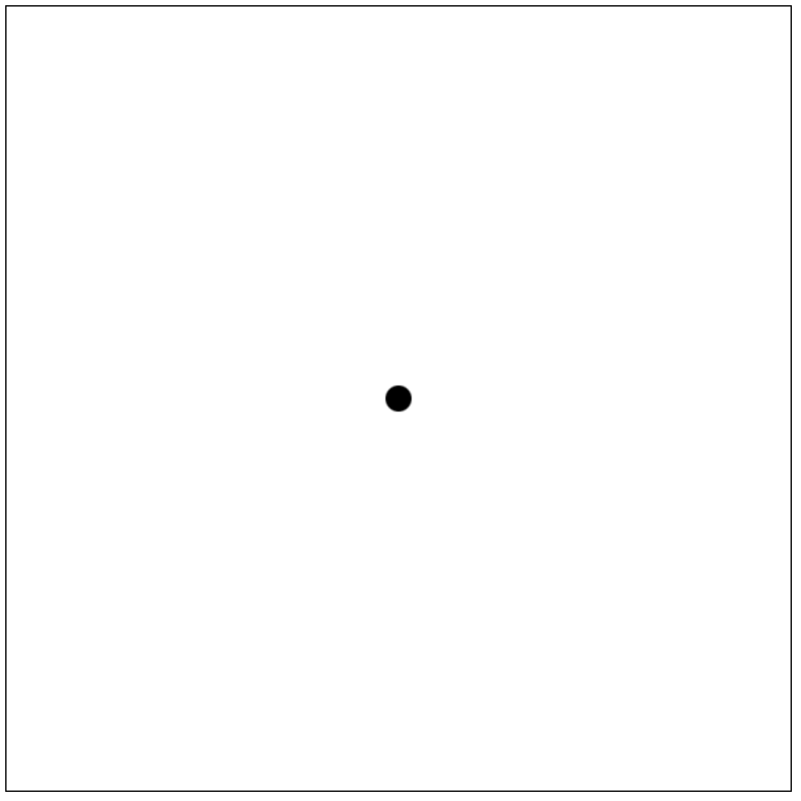
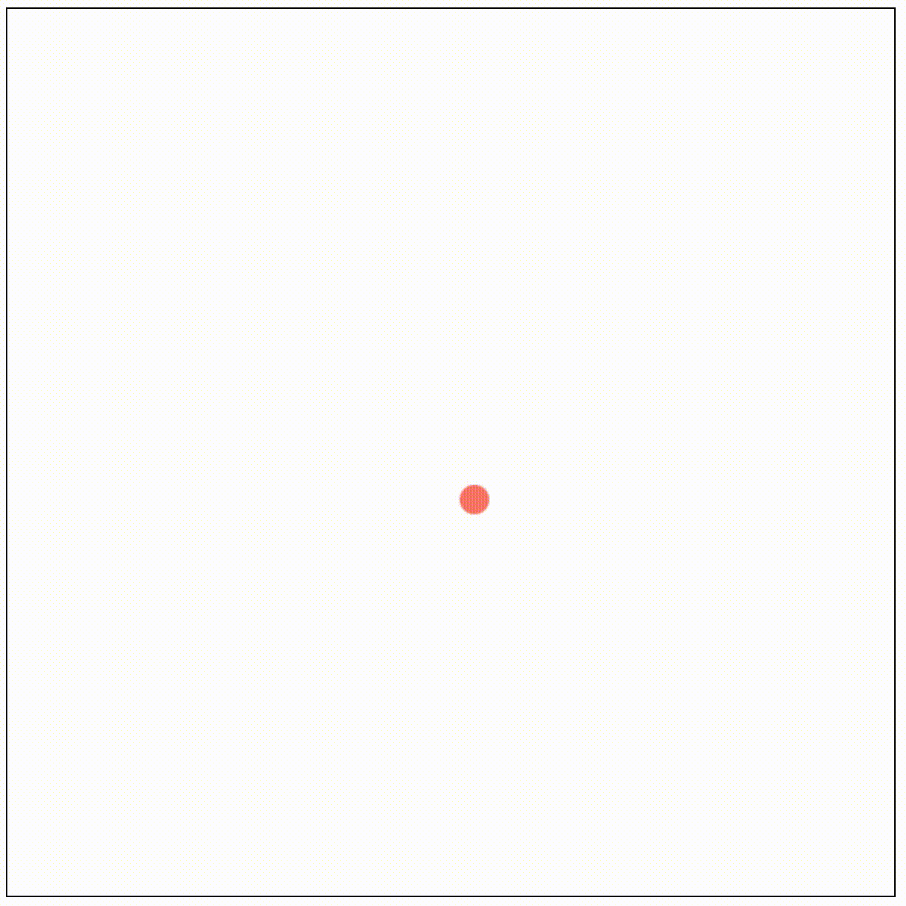
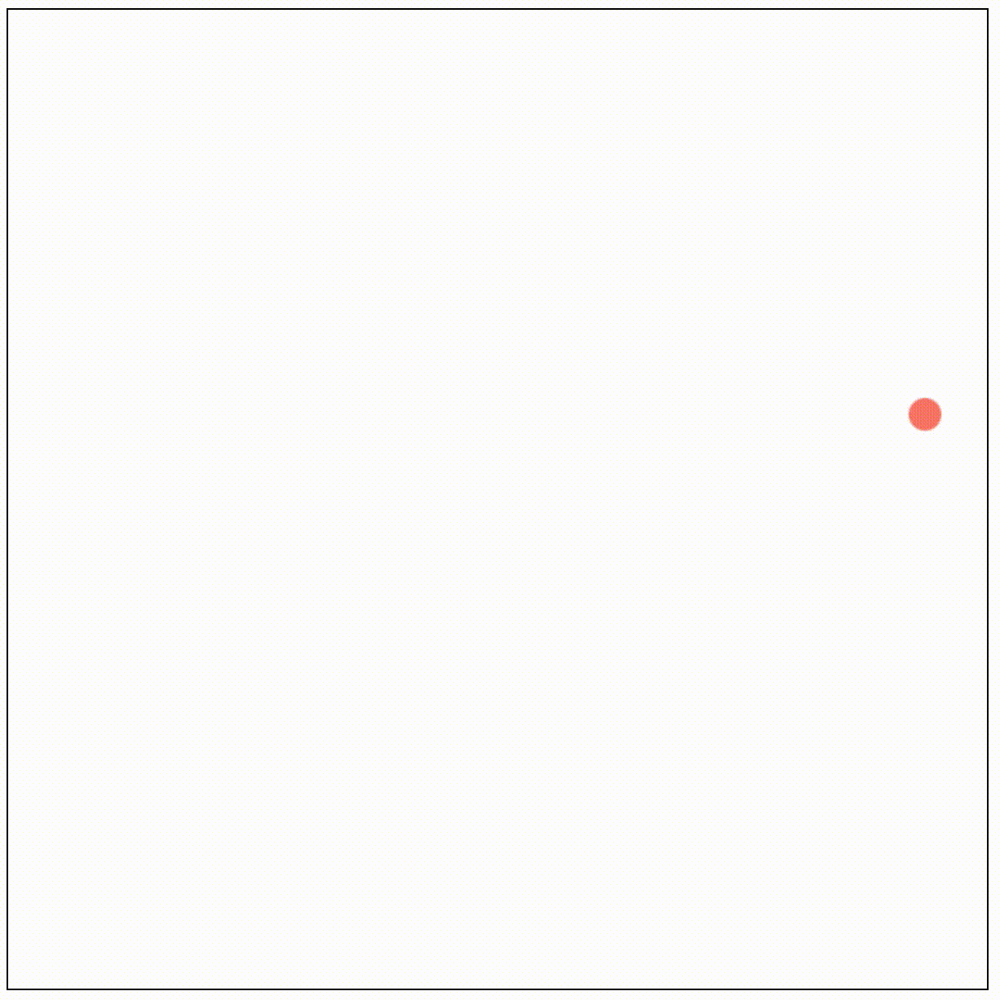
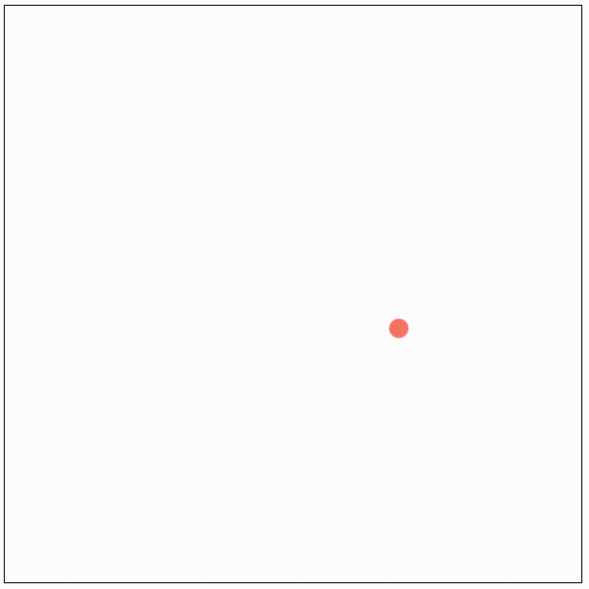

英語だと “bouncing ball programming” とか検索すると出てくるやつ。
単にボールが弾むだけなのだが、思ったより勉強になったので書き残す。
実際のプログラムの動作はGitHub Pagesを参照。
プロジェクトの初期化
適当なディレクトリを作って、その中でプロジェクトを作成。
% spago init
% spago build
今回は、追加のパッケージは必要なときにspago installコマンドで入れることにする。
Canvas入門
src/Main.pursを以下のようにする。
module Main where
import Prelude
import Data.Maybe (Maybe(..))
import Effect (Effect)
import Effect.Console (log)
import Graphics.Canvas (CanvasElement, Dimensions)
import Graphics.Canvas as Canvas
import Math as Math
canvasDimen :: Dimensions
canvasDimen =
{ width: 600.0
, height: 600.0
}
initCanvas :: CanvasElement -> Effect Unit
initCanvas canvas =
Canvas.setCanvasDimensions canvas canvasDimen
main :: Effect Unit
main =
Canvas.getCanvasElementById "canvas" >>=
case _ of
Just canvas -> do
initCanvas canvas
ctx <- Canvas.getContext2D canvas
Canvas.fillPath ctx $
Canvas.arc ctx
{ x: canvasDimen.width / 2.0
, y: canvasDimen.height / 2.0
, start: 0.0
, end: Math.tau
, radius: 10.0
}
Nothing ->
log "Error on getCanvasElementById."
ビルドに当たって，必要な以下の3つのパッケージをインストールする。
% spago install canvas math maybe
それぞれ以下の通り。
- canvas:
JavaScriptのCanvas APIのバインディング。
- math:
基本的にはJavaScriptのMathのバインディングになっているが、
上のコードで使っている
Math.tauに関しては2*Math.piとして定義されている。
- maybe:
お馴染み。
Canvas.getCanvasElementById関数がMaybe型を返すので必要。
実は、Canvas APIを使うのが今回が初めてだった。PureScriptでもJSでも変わらず、次のような方法で書くようだ。
canvas要素を取得。PureScriptの場合はgetCanvasElementByIdを利用。canvas要素からコンテキストを取得。PureScriptの場合はgetContext2Dを利用。- パスを作成するときは、
beginPathでパスを開始し、moveTo、lineTo、arcなどでパスを作っていって、
最後にstrokeで実際の描画を行う。fillにすると塗りつぶす。
- JSでは
fillStyleプロパティを書き換えて、塗りつぶしの色を設定する。PureScriptではsetFillStyle関数を利用する。
上のコードでのfillPathは、beginPathとfillを組み合わせて作られた関数であり、以下の2つのコードは同じ。
-- 1つ目
Canvas.fillPath ctx $
Canvas.arc ctx
{ x: canvasDimen.width / 2.0
, y: canvasDimen.height / 2.0
, start: 0.0
, end: Math.tau
, radius: 10.0
}
-- 2つ目
Canvas.beginPath ctx
Canvas.arc ctx
{ x: canvasDimen.width / 2.0
, y: canvasDimen.height / 2.0
, start: 0.0
, end: Math.tau
, radius: 10.0
}
Canvas.fill ctx
ブラウザ上での確認
JSのファイルに変換する。出力先ディレクトリはpublic/にする。
% spago bundle-app -t public/index.js
public/index.htmlを作成し、内容を以下のようにする。
<!DOCTYPE html>
<html>
<body>
<canvas id="canvas" style="border: 1px solid #000"></canvas>
<script src="index.js"></script>
</body>
</html>
index.htmlを開くと、黒い円が表示される。

Canvasのユーティリティの作成
後で利用するために、円を描画するための関数circleと，キャンバス全体をクリアするための関数clearCanvasを定義しておく。
パッケージ名はGraphics.Canvas.Extraとしたいので、src/Graphics/Canvas/Extra.pursを作成し、内容を以下のようにする。
module Graphics.Canvas.Extra where
import Prelude
import Effect (Effect)
import Graphics.Canvas (Context2D, Dimensions)
import Graphics.Canvas as Canvas
import Math as Math
clearCanvas :: Context2D -> Dimensions -> Effect Unit
clearCanvas ctx dimen =
Canvas.clearRect ctx
{ x: 0.0
, y: 0.0
, width: dimen.width
, height: dimen.height
}
type Circle =
{ x :: Number
, y :: Number
, radius :: Number
}
circle :: Context2D -> Circle -> Effect Unit
circle ctx {x, y, radius} =
Canvas.arc ctx
{ x
, y
, radius
, start: 0.0
, end: Math.tau
}
メインループの実装
試しに、ボールが左から右へ動くプログラムを作成してみる。
src/Main.pursを以下のようにする。
module Main where
import Prelude
import Data.Maybe (Maybe(..))
import Effect (Effect)
import Effect.Console (log)
import Effect.Timer as Timer
import Graphics.Canvas (CanvasElement, Context2D, Dimensions)
import Graphics.Canvas as Canvas
import Graphics.Canvas.Extra as Canvas
canvasDimen :: Dimensions
canvasDimen =
{ width: 600.0
, height: 600.0
}
initCanvas :: CanvasElement -> Effect Unit
initCanvas canvas =
Canvas.setCanvasDimensions canvas canvasDimen
type Model =
{ x :: Number
, y :: Number
}
init :: Model
init =
{ x: canvasDimen.width / 2.0
, y: canvasDimen.height / 2.0
}
update :: Model -> Model
update model@{x} =
model { x = x + 1.0 }
view :: Context2D -> Model -> Effect Unit
view ctx {x, y} = do
Canvas.setFillStyle ctx "salmon"
Canvas.fillPath ctx $
Canvas.circle ctx
{ x
, y
, radius: 10.0
}
mainLoop :: Context2D -> Model -> Effect Unit
mainLoop ctx model = do
Canvas.clearCanvas ctx canvasDimen
view ctx model
void $ Timer.setTimeout 10 $ mainLoop ctx (update model)
main :: Effect Unit
main =
Canvas.getCanvasElementById "canvas" >>=
case _ of
Just canvas -> do
initCanvas canvas
ctx <- Canvas.getContext2D canvas
mainLoop ctx init
Nothing ->
log "Error on getCanvasElementById."
setTimeoutを使いたいので、関連パッケージを入れておく。
% spago install js-timers
initでモデル(ここではただのxy座標)を初期化し、viewで描画処理を行い、updateでモデルの更新をする。
なんとなくTEAっぽい設計をした。
setTimeoutで10msおきに同じ関数を呼び出すようにしており、これでメインループを実現している。
前節同様、spago bundle-appを行ってindex.htmlを開くと、ボールが左から右へ動く様子が表示される(画像は略)。
ボールの作成
次のような仕様にする。
- ボールは
Ballという型で管理し、これはData.Ballで宣言する。
- ボールは位置、速度の情報を含むが、これは2次元のベクトルの形で管理する。
2次元ベクトルは
Vecという型で管理し、これはData.Vecで宣言する。
Vecの実装
src/Data/Vec.pursを作成する。以下、このファイルに内容を追記していく。
まず、Vec型を作成する。
recordを直接使うかnewtypeで包むかで選択肢があるが、
これは悩ましい問題(調べたらdiscourseで同じ議論があった。)。
ここではコンパイルエラーの見やすさの観点からnewtypeで包むことにした。
module Data.Vec where
import Prelude
newtype Vec = Vec
{ x :: Number
, y :: Number
}
newtypeで包んだので、値の取り出し方を考える必要がある。
Newtypeクラスのインスタンスにしてunwrap/wrapを直接使うという手段もあるが、
それがコード中で多用されるとなんとなく見づらい気がしたので、ここではゲッターとセッターを定義することにした。
getX :: Vec -> Number
getX (Vec {x}) = x
getY :: Vec -> Number
getY (Vec {y}) = y
setX :: Number -> Vec -> Vec
setX xnew (Vec v) =
Vec v { x = xnew }
setY :: Number -> Vec -> Vec
setY ynew (Vec v) =
Vec v { y = ynew }
Vecのコンストラクタと、0ベクトルを作成する便利関数を作っておく。
new :: Number -> Number -> Vec
new x y = Vec { x, y }
zero :: Vec
zero = Vec { x: 0.0, y: 0.0 }
ベクトル同士の演算やスカラー倍、ノルムを定義しておく。
import Math as Math -- コード上部に書いておく
add :: Vec -> Vec -> Vec
add (Vec u) (Vec v) =
new (u.x + v.x) (u.y + v.y)
sub :: Vec -> Vec -> Vec
sub (Vec u) (Vec v) =
new (u.x - v.x) (u.y - v.y)
mult :: Number -> Vec -> Vec
mult c (Vec v) =
new (c * v.x) (c * v.y)
div :: Vec -> Number -> Vec
div (Vec v) c =
new (v.x / c) (v.y / c)
magSq :: Vec -> Number
magSq (Vec v) =
v.x * v.x + v.y * v.y
mag :: Vec -> Number
mag v = Math.sqrt $ magSq v
Ballの実装
src/Data/Ball.pursを作成する。以下、このファイルに内容を追記していく。
とりあえず、Ballは位置ベクトルrと速度ベクトルvと半径radiusを持っているとする。
後でいくつかフィールドを足す。
module Data.Ball where
import Prelude
import Data.Vec (Vec)
newtype Ball = Ball
{ r :: Vec
, v :: Vec
, radius :: Number
}
ゲッター、セッターを定義する。
getR :: Ball -> Vec
getR (Ball {r}) = r
getV :: Ball -> Vec
getV (Ball {v}) = v
setR :: Vec -> Ball -> Ball
setR r (Ball b) = Ball b { r = r }
setV :: Vec -> Ball -> Ball
setV v (Ball b) = Ball b { v = v }
getRadius :: Ball -> Number
getRadius (Ball {radius}) = radius
コンストラクタを作成。
Canvas用の描画形式に変換する関数も定義しておく。
-- 以下の2行はファイル最初に追加
import Data.Vec as Vec
import Graphics.Canvas.Extra (Circle)
new :: Vec -> Vec -> Number -> Ball
new r v radius = Ball { r, v, radius }
toCircle :: Ball -> Circle
toCircle (Ball {r, radius}) =
{ x: Vec.getX r
, y: Vec.getY r
, radius
}
Ballの作成・更新・描画
src/Main.pursのModel、init、update、viewを以下のようにする。
--- 以下の3行はファイル最初に追加
import Data.Ball (Ball)
import Data.Ball as Ball
import Data.Vec as Vec
type Model = Ball
init :: Model
init =
Ball.new
(Vec.new
(canvasDimen.width / 2.0)
(canvasDimen.height / 2.0))
(Vec.new 1.0 2.0)
10.0
update :: Model -> Model
update ball =
Ball.update ball
view :: Context2D -> Model -> Effect Unit
view ctx ball = do
Canvas.setFillStyle ctx "salmon"
Canvas.fillPath ctx $
Canvas.circle ctx $ Ball.toCircle ball
initでボールを作成。updateでボールの状態(位置や速度)を更新。viewでBallを円として描画している。
Ball.updateがまだ未実装なので、再びsrc/Data/Ball.pursに戻る。ひとまず以下の定義にする。
単純に等速直線運動させる。
update :: Ball -> Ball
update ball =
setR
(Vec.add
(getR ball)
(getV ball))
ball
spago bundle-appした結果は以下のようになる。

跳ね返りの実装
src/Data/Ball.pursを編集する。Ballを動かす処理をmoveに任せ、跳ね返りの処理をcollideに任せる。
move :: Ball -> Ball
move ball =
setR
(Vec.add (getR ball) (getV ball))
ball
update :: Dimensions -> Ball -> Ball
update dimen ball =
move $ collide 1.0 dimen ball
moveは位置ベクトルに速度ベクトルを加算しているだけ。
collideは、キャンバスの四方にぶつかった際に、位置を補正して、速度を逆向きにする処理を行う。
第1引数に反発係数をとる(上のコードでは1.0を設定している)。
この処理は擬似コードで書くと、
if (ボールが左にはみ出た) {
速度のx座標の符号を反転;
ボールの座標を左端に補正;
}
if (ボールが右にはみ出た) {
速度のx座標の符号を反転;
ボールの座標を右端に補正;
}
if (ボールが上にはみ出た) {
速度のy座標の符号を反転;
ボールの座標を上端に補正;
}
if (ボールが下にはみ出た) {
速度のy座標の符号を反転;
ボールの座標を下端に補正;
}
みたいに書きたい。上のように、「ボールの状態の変更するという命令」
を上から順に実行しているように書きたい場合は、Stateモナドが適していると思われる(恐らく)。
ただし一応Stateモナドを使わないバージョンも考えみたので、いくつか実装例を示す。
実装例(1): 位置や速度をまとめて更新
新しい位置や速度を計算して、最後に一気にballに反映させる戦略。
ネストが深くなるのを防ぐために、あえて冗長な実装を考えてみた。
まずxy軸それぞれについて、キャンバスの外にはみ出ているか否かを判定するために、
getIntervalPosition関数を定義する。
getIntervalPosition a b xは、xと閉区間[a, b]との位置関係を返す関数である。すなわち、
x < aであるか(Small)a <= x <= bであるか(Within)b < xであるか(Large)
を返す関数である。
data IntervalPosition
= Small
| Within
| Large
getIntervalPosition :: Number -> Number -> Number -> IntervalPosition
getIntervalPosition a b x =
if x < a
then
Small
else
if x <= b
then Within
else Large
これを使ってcollide関数を実装する。円の大きさを衝突の計算で考慮するために、
変数x0, x1, y0, y1を導入している。そして、
- ボールのx座標が区間
[x0, x1]に対しどのような位置にあるか
- ボールのy座標が区間
[y0, y1]にに対しどのような位置にあるか
をgetIntervalPositionで計算している。その返却値によって新しい位置ベクトル、速度ベクトルのxy座標を決定する。
import Data.Tuple (Tuple(..)) -- ファイル最初に追記
collide :: Number -> Dimensions -> Ball -> Ball
collide e dimen ball =
setR (Vec.new newX newY) $
setV (Vec.new newVx newVy) ball
where
r = getR ball
v = getV ball
x = Vec.getX r
y = Vec.getY r
vx = Vec.getX v
vy = Vec.getY v
radius = getRadius ball
x0 = radius
x1 = dimen.width - radius
y0 = radius
y1 = dimen.height - radius
Tuple newX newVx =
case getIntervalPosition x0 x1 x of
Small ->
Tuple x0 (-e * vx)
Large ->
Tuple x1 (-e * vx)
Within ->
Tuple x vx
Tuple newY newVy =
case getIntervalPosition y0 y1 y of
Small ->
Tuple y0 (-e * vy)
Large ->
Tuple y1 (-e * vy)
Within ->
Tuple y vy
Tupleを使っているので、tuplesをインストールしておく。
% spago install tuples
個人的に見通しよく書けたと思うが、やっぱり難しく考えすぎかも…。
実装例(2) Stateを使わない状態の変更
条件分岐の度にballを更新する戦略。Stateを使わないバージョンだと、
以下のように関数fx0, fx1, fy0, fy1の適用を連鎖させる感じになる。
collide :: Number -> Dimensions -> Ball -> Ball
collide e dimen ball = fy1 $ fy0 $ fx1 $ fx0 ball
where
r = getR ball
v = getV ball
radius = getRadius ball
x = Vec.getX r
y = Vec.getY r
vx = Vec.getX v
vy = Vec.getY v
x0 = radius
x1 = dimen.width - radius
y0 = radius
y1 = dimen.height - radius
fx0 :: Ball -> Ball
fx0 ball =
if (x < x0)
then setR (Vec.setX x0 r) $ setV (Vec.setX (-e * vx) v) ball
else ball
fx1 :: Ball -> Ball
fx1 ball =
if (x > x1)
then setR (Vec.setX x1 r) $ setV (Vec.setX (-e * vx) v) ball
else ball
fy0 :: Ball -> Ball
fy0 ball =
if (y < y0)
then setR (Vec.setY y0 r) $ setV (Vec.setY (-e * vy) v) ball
else ball
fy1 :: Ball -> Ball
fy1 ball =
if (y > y1)
then setR (Vec.setY y1 r) $ setV (Vec.setY (-e * vy) v) ball
else ball
実装例(3) Stateを使う状態の変更
上述した擬似コードと似た雰囲気で書ける。
import Control.Monad.State (State, execState, modify_, gets) -- ファイル最初に追記
collide :: Number -> Dimensions -> Ball -> Ball
collide e dimen ball = execState state ball
where
state :: State Ball Unit
state = do
r <- gets getR
v <- gets getV
radius <- gets getRadius
let x = Vec.getX r
y = Vec.getY r
vx = Vec.getX v
vy = Vec.getY v
x0 = radius
x1 = dimen.width - radius
y0 = radius
y1 = dimen.height - radius
when (x < x0) do
modify_ $ setR (Vec.setX x0 r)
modify_ $ setV (Vec.setX (-e * vx) v)
when (x > x1) do
modify_ $ setR (Vec.setX x1 r)
modify_ $ setV (Vec.setX (-e * vx) v)
when (y < y0) do
modify_ $ setR (Vec.setY y0 r)
modify_ $ setV (Vec.setY (-e * vy) v)
when (y > y1) do
modify_ $ setR (Vec.setY y1 r)
modify_ $ setV (Vec.setY (-e * vy) v)
Stateを使っているのでtransformersを入れる。
% spago install transformers

簡易的な物理演算
重力などの力を加えて加速度を生じさせたい。
力と質量の追加
Ballにforceフィールド、massフィールドを追加する。
newtype Ball = Ball
{ r :: Vec
, v :: Vec
, radius :: Number
, force :: Vec
, mass :: Number
}
force、massのゲッターを追加する。
getForce :: Ball -> Vec
getForce (Ball { force }) = force
getMass :: Ball -> Number
getMass (Ball { mass }) = mass
力はaddForceで追加することと、initForceで初期化することしかできないようにする。
applyForceは、運動方程式mass * a = forceから加速度a = force / massを計算し、
加速度を使ってvを更新する関数。計算し終えたら力を初期化する。
addForce :: Vec -> Ball -> Ball
addForce newForce (Ball b@{ force }) =
Ball b { force = Vec.add force newForce }
initForce :: Ball -> Ball
initForce (Ball b) =
Ball b { force = Vec.zero }
applyForce :: Ball -> Ball
applyForce ball =
let a = Vec.div (getForce ball) (getMass ball)
newV = Vec.add (getV ball) a
in
initForce $ setV newV ball
Ballのフィールドが増えたので、コンストラクタを修正する。
new :: Vec -> Vec -> Number -> Number -> Ball
new r v radius mass =
Ball
{ r
, v
, radius
, force: Vec.zero
, mass
}
それに伴いsrc/Main.pursも修正する。
init :: Model
init =
Ball.new
(Vec.new
(canvasDimen.width / 2.0)
(canvasDimen.height / 2.0))
(Vec.new 1.0 2.0)
10.0
10.0
重力の追加
src/Data/Ball.pursのupdateを以下のようにする。mass * 定数の力を返す関数gravityを新たに定義する。
update関数は以下の手順を踏む。
- ボールに力を加えて、
- ボールの衝突判定をして(反発係数は0.9)、
- ボールの位置を動かして
- ボールが受けている力を元に速度を更新する。
update :: Dimensions -> Ball -> Ball
update dimen ball =
applyForce $
move $
collide 0.9 dimen $
addForce (gravity (getMass ball)) ball
gravity :: Number -> Vec
gravity mass =
Vec.mult mass $ Vec.new 0.0 0.25
初期速度がこのままだと動きがあまりなく面白くないので、初期速度を変更する。
src/Main.pursのinit関数にて、速度のx座標を大きくする。
init :: Model
init =
Ball.new
(Vec.new
(canvasDimen.width / 2.0)
(canvasDimen.height / 2.0))
(Vec.new 10.0 2.0)
10.0
10.0
spago bundle-appして確認してみると以下のようになる(gif画像なのでカクついているが、実際はもっと滑らかに動く)。

(おまけ) update関数をStateを使って書き直す
Stateを使うと以下のように書ける。
ボールの状態の変更を行う関数が上から下へと並んでいて、まるで命令型言語で書いてあるような雰囲気が出る。
update :: Dimensions -> Ball -> Ball
update dimen ball = execState state ball
where
state :: State Ball Unit
state = do
modify_ $ addForce (gravity (getMass ball))
modify_ $ collide 0.9 dimen
modify_ $ move
modify_ $ applyForce
考えたこと
位置と速度の書き間違い
collideを定義するとき、以下のような文があった。
...
let r = getR ball
v = getV ball
...
これを次のようにしてもコンパイルは通ってしまうが、バグを産む
(実は実際やってしまい、ボールの挙動がおかしくなった)。
...
let r = getV ball
v = getR ball
...
このような論理的な間違いをコンパイルエラーにするためには、
次のように速度と位置をラッピングすると良いのだろうか、と思った。
(もっとも、これくらいのミスは自分で気付くべきかもしれないが…)。
ただし、色々書かなくてはならない部分が増える(例えば、速度と位置の足し算を行う関数など)。
newtype Position = Position Vec
newtype Velocity = Velocity Vec
newtype Ball = Ball
{ r :: Position
, v :: Velocity
, ...
}
これは力についてもいえて、力をVecで扱うのではなくnewtype Force = Force Vecと使うべきか。
ソースコードとデモ
ソースコードはGitHubのRepositryとして公開した。
デモはGitHub Pagesとして公開した。